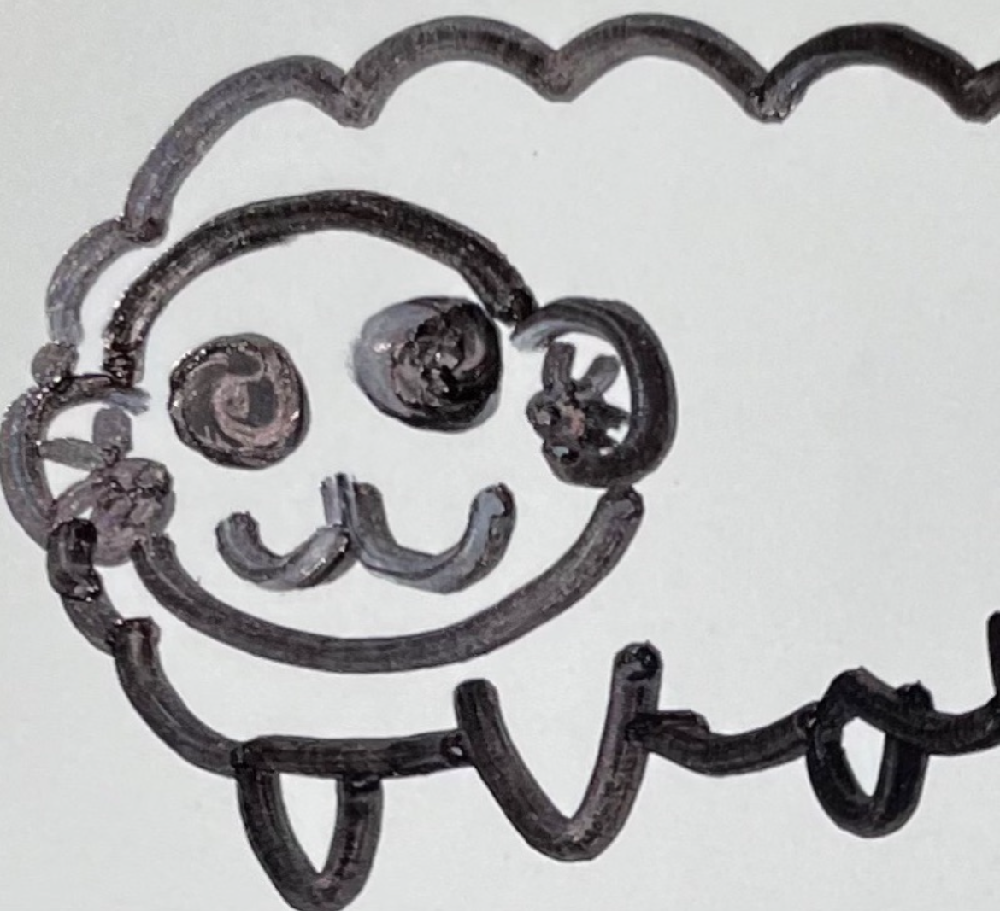
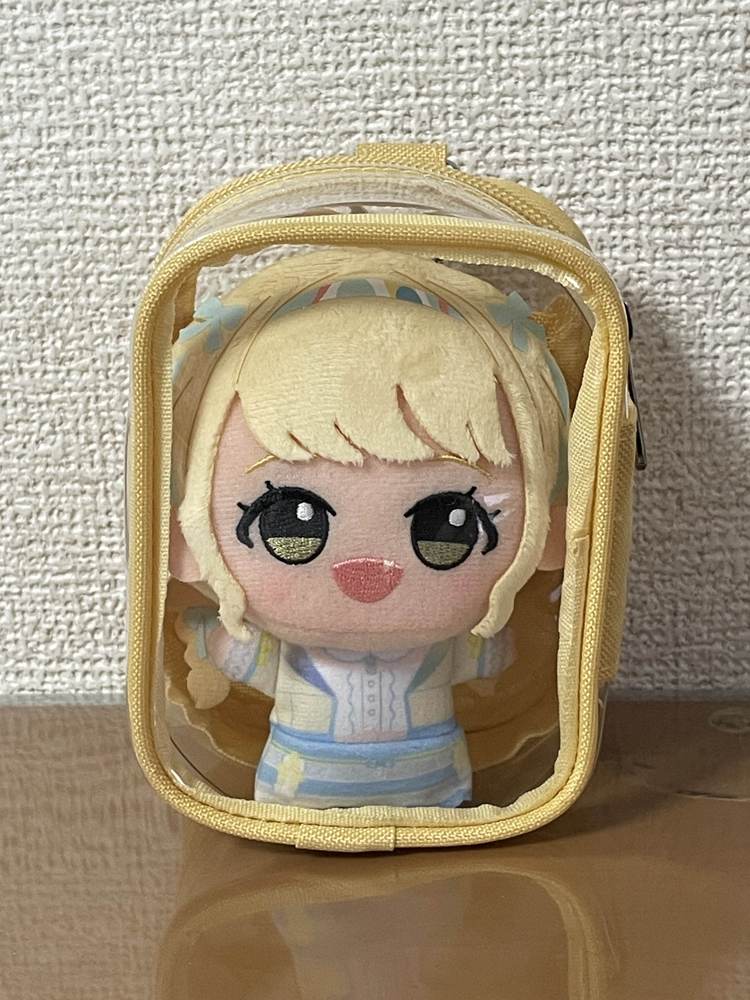
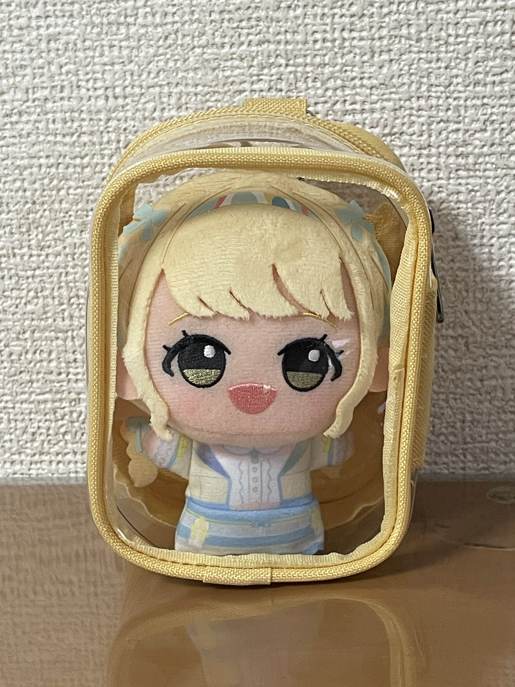

森川 直哉
もりかわ なおや
学部・コース
工学部 情報工学科4年
担当
制御回路班
出身
大阪府
趣味・特技
 

- カブ
- 学マス(ことね推し)
- 未知なる味を求めて探求すること
- ガジェット・電子工作
- 漫画・アニメ
ロボコン部でどんなことをしていたか
2023年度から2024年度にかけて、「ロボコン部部長としてチーム運営をしていました。また、ロボット製作に必要な「メカ」「エレキ」「ソフト」の3要素のうち、特にエレキ（電気回路）とソフト（ソフトウェア）の2分野を中心に参加しており、C言語を用いたロボットの制御プログラムの設計・開発、そしてそのプログラムを稼働させるための回路および基盤の設計・製作を担当しました。主な技術的成果は以下のようになります。
- 既存STM32マイコンの大幅な省略化(可読性の向上を目的に、約7,000行あったプログラムのハードウェアに近い処理をライブラリにして短縮)
- ESP32マイコンの新規導入、安定した無線通信システムの構築
- リレー基板(SSRの導入)と電磁弁基板の設計・製作、ロボットの制御システムを安定稼働させました。
現在は、次世代ロボット開発の標準フレームワークであるROS2を用いた開発に意欲的に取り組んでおり、ロボットに高度な自立移動機能を実現することを目指しています。